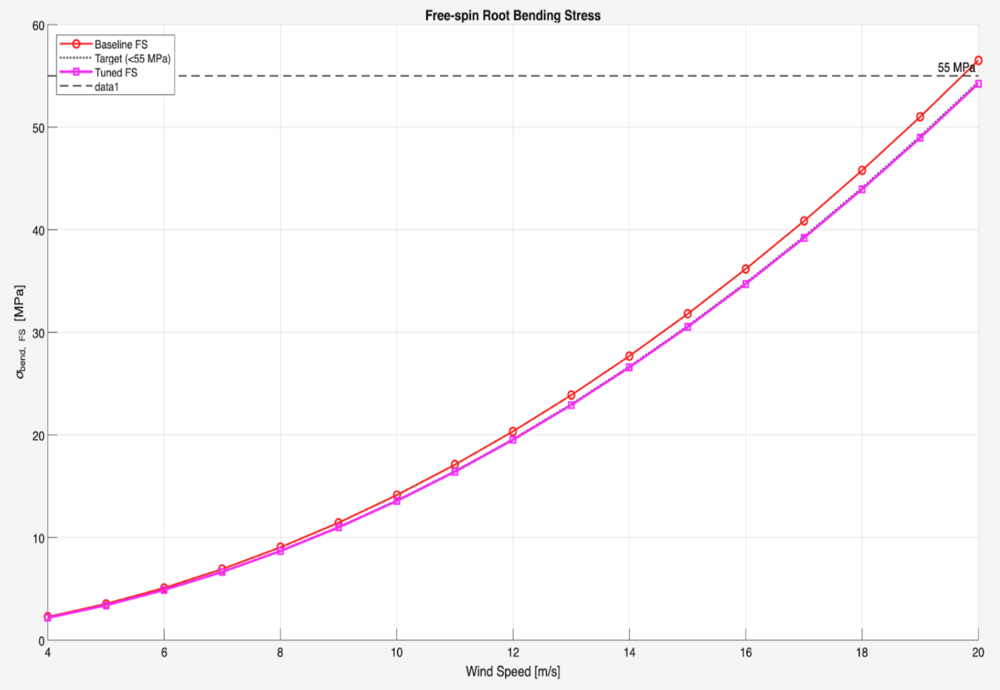
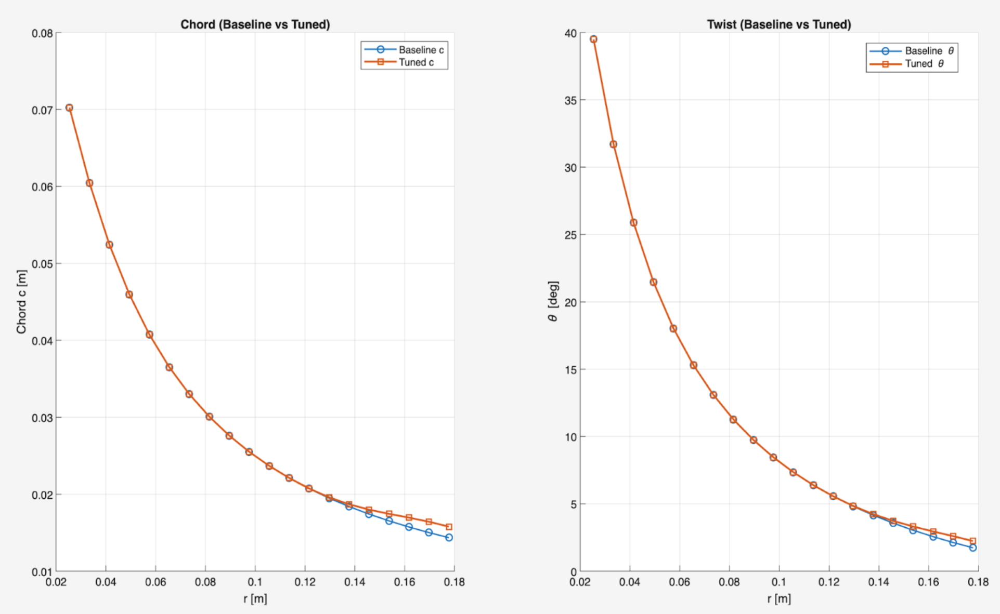
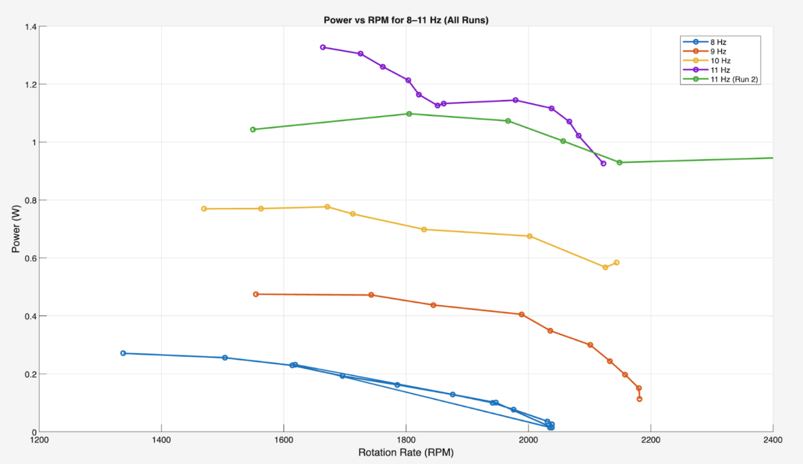
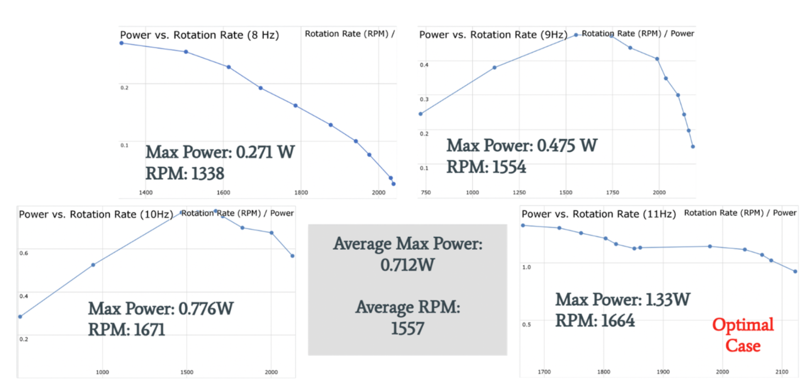
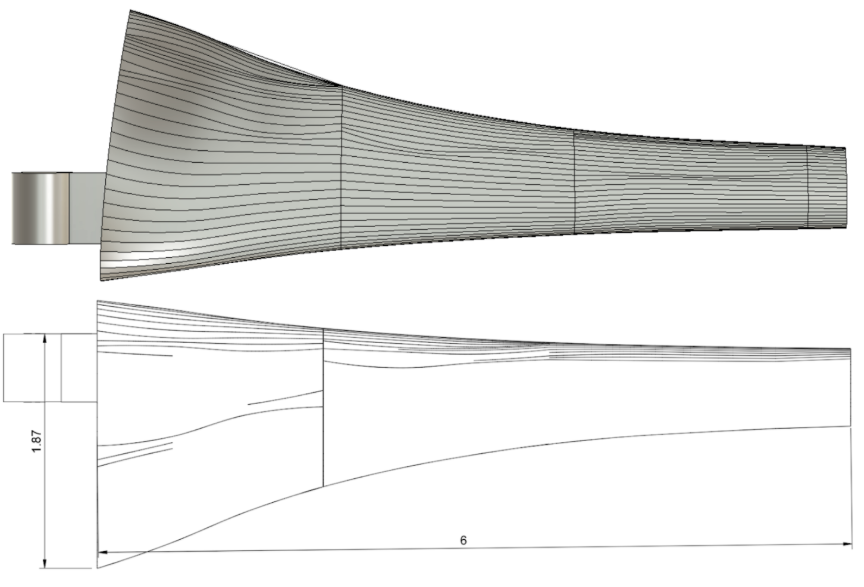

As part of MAE 4272: Fluids and Heat Transfer Laboratory course, our team was tasked with designing a wind turbine blade capable of maximizing power output under fixed wind tunnel operating conditions. The primary objectives were to optimize aerodynamic performance, prevent structural failure under free-spin conditions, and ensure compatibility with system constraints such as the 55 MPa material limit, 6-inch blade length restriction, 1-inch radius hub, a maximum safe rotational speed of 2000 RPM, wind speeds characterized by a Weibull distribution, and fixed parameters of k = 5 and c = 5.

Using a MATLAB-based blade element and bending-stress model, our team iterated twist and chord distributions to improve power output while reducing root bending stress. The final design operated safely across 8–11 Hz wind-tunnel frequencies and achieved a peak experimental power of 1.33 W at 1664 RPM, which aligned closely with our theoretical optimal operating point.


Testing revealed that actual torque values were lower than predicted, indicating that the MATLAB model overestimated torque at high tip-speed ratios(TSR). System-level constraints such as the torque-brake control resolution and the approach to the 2000 RPM safety limit ultimately prevented the turbine from being tested above ~11 Hz.

Despite these constraints, the final blade design met the project requirements, demonstrated stable behavior across all assigned frequencies, and delivered consistent power generation. The project underscored the importance of coupling aerodynamic modeling with structural safety considerations and system-level limitations. It also highlighted several pathways for future improvement, including incorporating tip-vortex losses, modeling induction effects at high TSR, and refining CAD geometry to reduce drag and improve manufacturability.

Overall, the design met its theoretical goals and produced consistent experimental performance. The project highlighted the importance of coupling aerodynamic design with realistic system constraints and offered several clear improvement paths for future iterations.
A notable part of this project was the strong group dynamic throughout the design process. Each team member took on a clear responsibility that allowed us to work efficiently and stay organized. Two members of my group focused on developing and refining the MATLAB code, ensuring our theoretical predictions were well structured. Another one was focused on handled documentation, helping keep our results, decisions, and progress organized and clear. And I was responsible for creating the blade CAD model and iterating on the geometry based on both aerodynamic reasoning and structural limits. This division of roles made the workflow smooth and allowed us to combine our strengths effectively.
Performance summary
The peak measured power was 1.33 W at 1664 RPM and 11 Hz. The peak of the average power curve was approximately 0.712 W at 1557 RPM. The modeled failure wind speed was approximately 18.8 m/s with a safety factor of 1.5; this was a prediction, not a measured failure test.